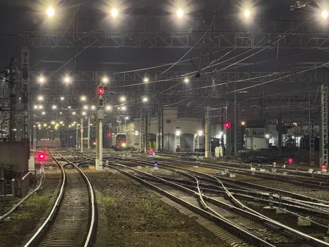

Если вы думаете, что, став монополистом, можно расслабиться - как бы не так. Даже если вы доминируете в своем сегменте рынка, вы должны расти. Остановившись, вы проиграете (ну если полный коммунизм еще не наступил). А как расти, если вы уже №1? У кого отбирать долю? Очевидно, у непрямых конкурентов. То есть у тех, с кем вас даже особо не сравнивают, когда выбирают продукт.
Гугл (в мире) конкурирует не с другими поисковиками, а с привычками людей, чтобы быть top of mind не только в задачах поиска. Газпром конкурирует не с другими газовыми компаниями, а с фондовыми рынками. Яндекс Такси конкурирует с общественным транспортом. Яндекс еда - с привычкой готовить дома (впрочем, Еда и так не монополист, так как своя доставка ресторанов и магазинов занимает большую долю рынка).
Чтобы конкурировать вне своего сегмента, недостаточно быть "как конкурент, но чуть лучше". Тут нужно выходить за рамки привычного продукта - завоевывать новые ниши, менять ландшафт рынка, влиять на привычки пользователей, создавать новые уникальные товарные предложения. А это - уже игра в другой лиге.
К чему я все это? Эти строки для утреннего поста я пишу из вагона ночного поезда Москва - Санкт-Петербург, который в моей голове в этот раз (и примерно впервые) выиграл в конкуренции с самолетами. В том числе, благодаря УТП в виде гранд-империал-люкс-купе с собственным туалетом и душем (ну не могу я с поезда приехать на работу без душа и с немытой головой). Оказывается, бывает и такое. Отдельный прикол в том, что это как раз не РЖД, а частный поезд, но и у РЖД такие люксы, вроде бы, теперь появились. Но пойнт к том, что тут не РЖД конкурирует с Гранд Экспрессом, и не Аэрофлот с S7, а ж/д с авиа.
И казалось бы, что тут могло поменяться за последние пару десятков лет? А оно меняется, хотя в своих сегментах есть очевидные лидеры. Ж/д делают новые вагоны, не сильно уступающие в комфорте отелям. Аэрофлот запустил шаттл (рейсы строго раз в полчаса с упрощенным изменением рейса в пределах дня). Спрос рождает конкуренцию. А конкуренция - двигатель прогресса. Не останавливайте развитие, даже если кажется, что свой кусок пирога вы уже отъели. А чтобы расти с высокой базы, нужны экстра-усилия и драматическое расширение сферы влияния.
